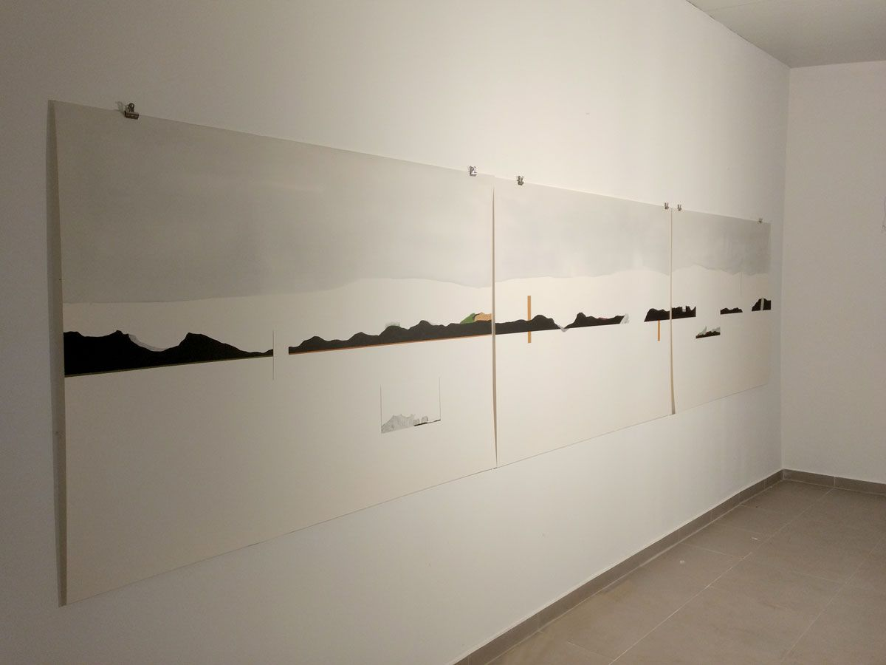
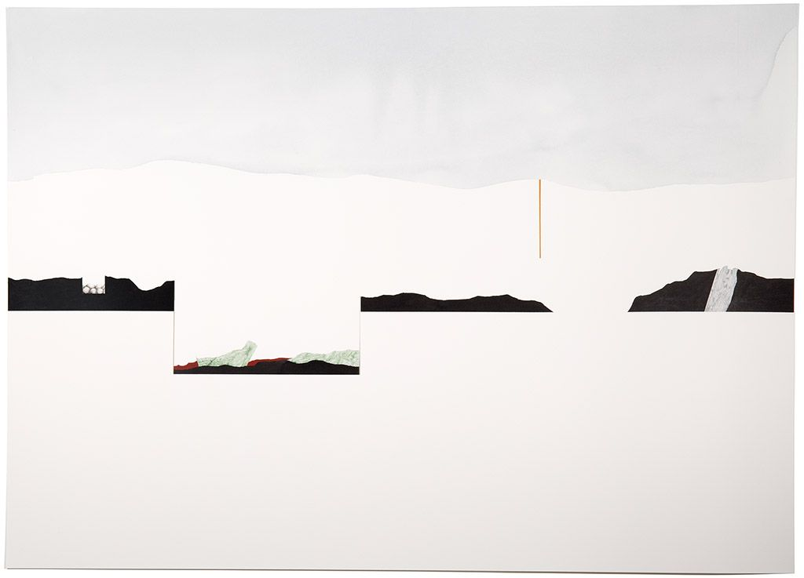
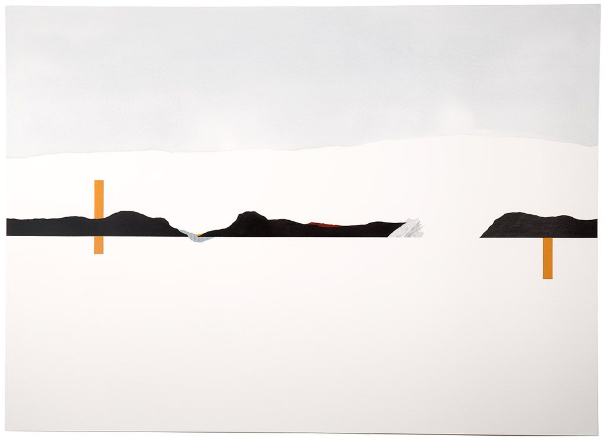
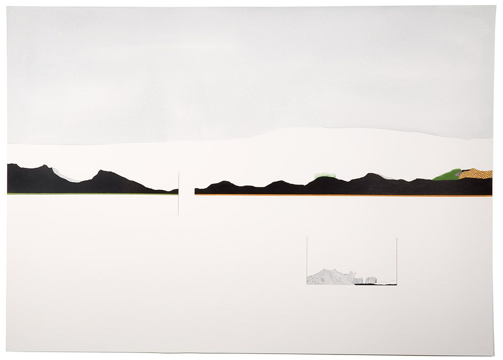
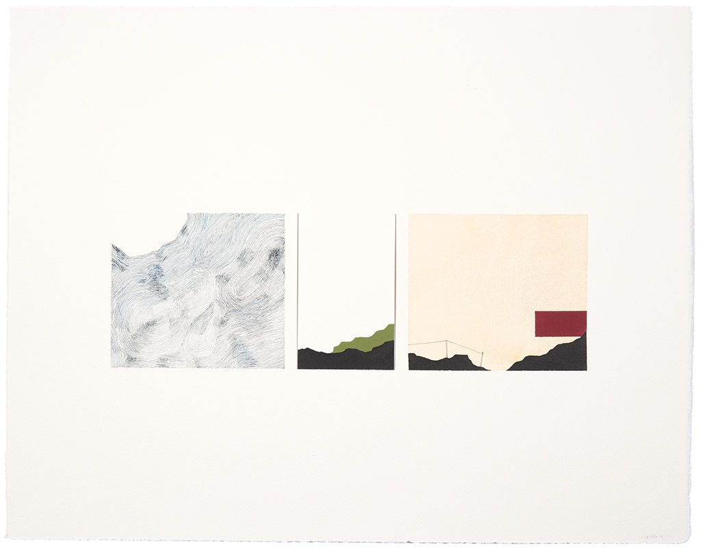
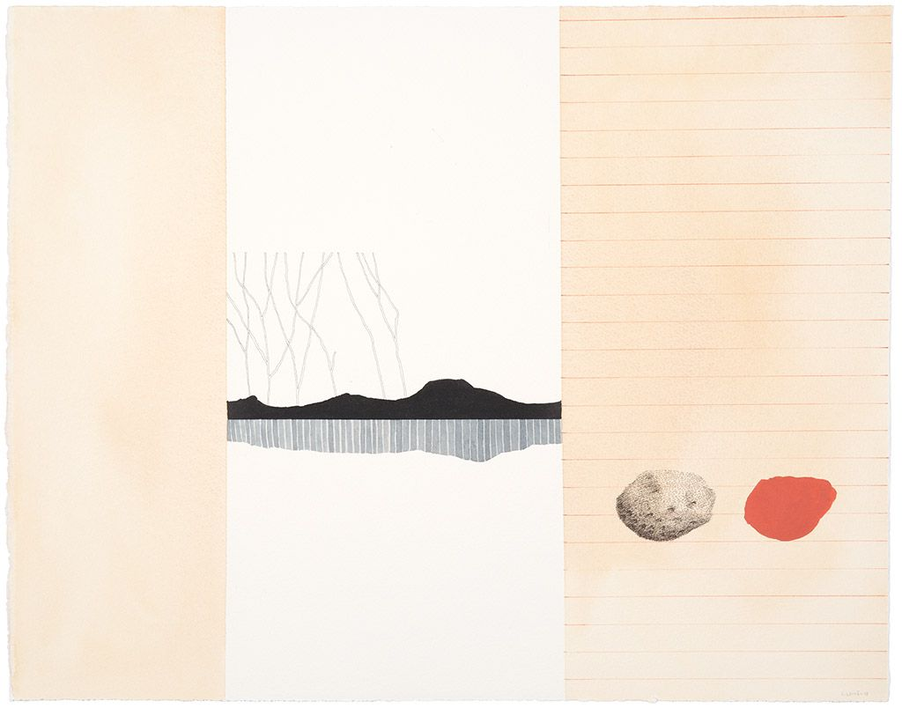
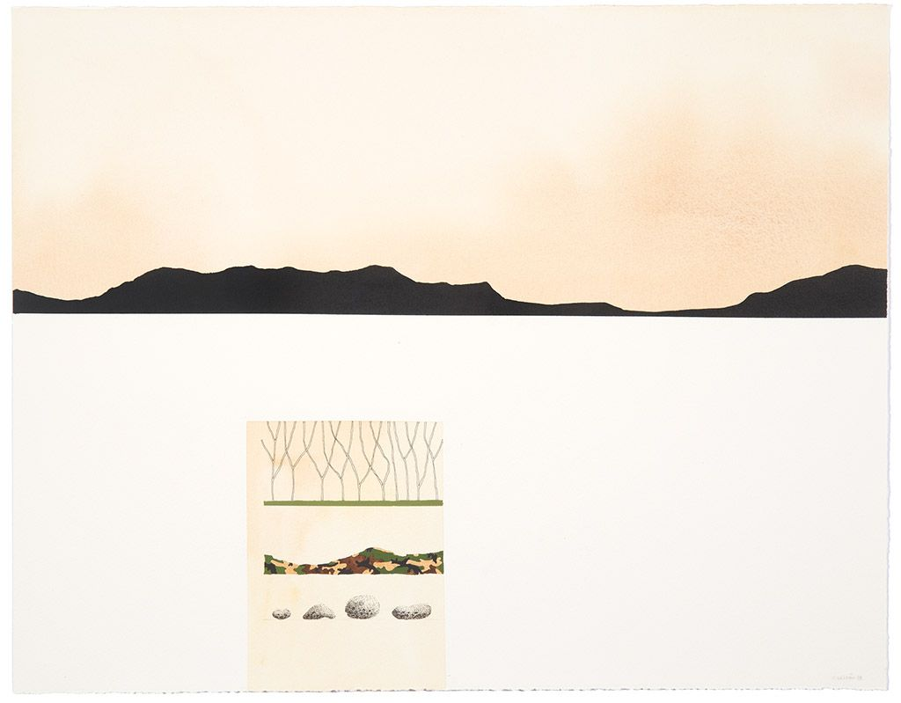
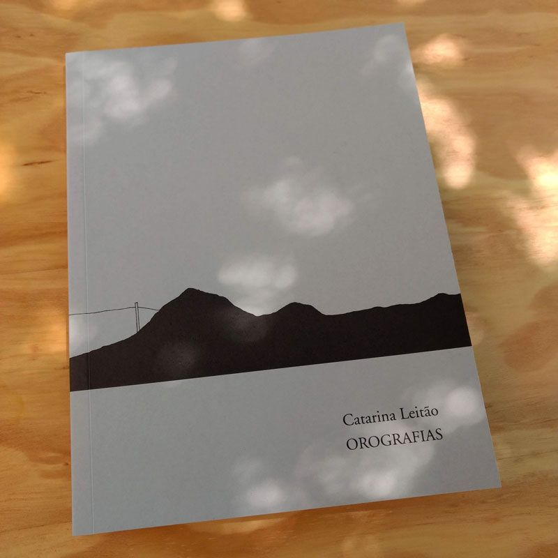

Orografias
Giefarte, Lisboa, 2019. Curadoria de Maria do Mar Fazenda
Exposição individual na Giefarte, em Lisboa, com curadoria de Maria do Mar Fazenda. O catálogo, editado pela Giefarte e pela Documenta, inclui o texto da curadora, Cadernos de campo e contracampo.








Textos
- Cadernos de campo e contracampo / Field and Counter-Field NotebooksMaria do Mar Fazenda · Catarina Leitão | Orografias, Giefarte/Documenta, Lisboa · 04.2019 · PT / EN
Imprensa
- Orografiascatálogo/exposição individual, texto Maria do Mar Fazenda, Giefarte/Documenta, Lisboa, 2019